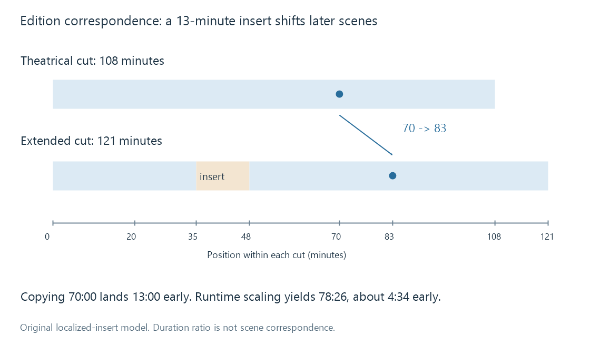

Movie editions and cuts
A movie edition identifies a particular cut or presentation of a film whose content and timeline may differ from other releases.
The theatrical cut and an extended cut can tell different versions of the same film. Their scenes, pacing and duration may differ even when a metadata provider describes both with one movie record. An edition identifies that content or presentation; an encode identifies how a representation was compressed and packaged.
A new encode does not automatically make a new cut. Conversely, the same codec and resolution do not establish that two files contain the same edition.
| Change between two files | Likely relationship | Information needed to distinguish them |
|---|---|---|
| 1080p and 4K encodes of one cut | Alternate technical representations | Resolution, codec, colour format and source quality |
| Theatrical and extended cuts | Different editorial editions | Cut label, scene correspondence and duration |
| Restored transfer with the same scene sequence | A changed presentation, possibly the same cut | Restoration/master information and actual content |
| Censored release with replaced material | An edition difference | Region/release context and sequence differences |
Labels such as Director's cut, Unrated or Restored describe release claims. Their exact meaning depends on the release; they do not specify a universal transformation of the film.
Why a timestamp belongs to a cut
Imagine an original fictional film lasting 108 minutes. An extended edition inserts 13 minutes of new material at the original 35-minute point and otherwise preserves the sequence. Its duration becomes 121 minutes.
In this deliberately simple model:
Before the insertion:
extended time = theatrical time
After the insertion:
extended time = theatrical time + 13 minutes
A scene at theatrical minute 20 remains at extended minute 20. A scene at theatrical minute 70 moves to extended minute 83. An insertion boundary needs the same care as any edit boundary: the time just before the insert and the corresponding scene just after it are different positions.

The model is an original illustration, not an Emby timeline-conversion algorithm. Real cuts can remove, reorder or replace scenes, so correspondence may require multiple segments or may not exist for a particular passage.
Percentage is not scene identity
A resume point at 70 minutes is about 64.81% of the 108-minute cut. Taking 64.81% of the extended duration produces approximately 78:26. The corresponding scene is at 83:00, so the proportion-based guess lands about 4 minutes 34 seconds early.
Preserving elapsed time produces a different error: 70:00 in the extended version is 13 minutes before the corresponding scene. Both values are numerically valid playback positions. Neither means “continue at the same moment in the story.”
This is why resume positions, chapter markers and timed subtitles need the correct source timeline. A shared movie ID cannot supply a missing edit map.
Edition-dependent material
Several assets that look like movie metadata are actually tied to the represented edition.
Subtitles refer to dialogue and its presentation times. An insert may shift later cues; replacement dialogue may require different text. Merely changing one global offset cannot fix a cut with several edits.
Chapters refer to the actual sequence and timing. The same chapter name can occur at different positions, and a deleted scene can remove a chapter altogether.
Seek previews and intro/credit markers are derived from particular media. If the new file changes the sequence, a cache created for the old edition can show the wrong pictures or identify the wrong interval.
Technical runtime describes the resource. A provider's general movie runtime may describe another release. Comparing both values can reveal a mismatch, but it cannot determine the cut without more evidence.
Equal runtimes can conceal different content
Two releases can last 108 minutes while exchanging a scene, replacing an opening logo, changing credits or applying speed conversion alongside other edits. Duration agreement is evidence of a possible match, not proof of identical sequence.
Likewise, duration differences are not always editorial. Different frame-rate playback of the same sequence can alter total time without adding scenes. A comparison needs both the content and its time interpretation.
An edition label is therefore useful when it describes something a viewer would want to choose. A label containing only HEVC answers a technical question; a label containing Extended cut answers a content question. If both differ, recording both distinctions makes the choice understandable.
Edition identity in a library
A provider may describe the film as one work while the local library retains several sources or separately presented editions. These are different modelling decisions. Grouping cuts together makes work-level browsing convenient; preserving distinct edition identity helps retain edition-specific history and assets.
Emby's movie naming guide describes multi-version presentation and notes limitations when it is used for different cuts. That is a reason to consider the relationship deliberately rather than to assume a version label creates an independent edition model.
For the fictional example, the informative description is “extended cut, with a 13-minute insert after minute 35,” not just “another file of Night Ferry.” The former explains why the timeline changes; the latter cannot tell a player, a subtitle author or a viewer which position remains meaningful.
See Also
- Alternate media versions
- Media item identity
- Resume positions and playback timelines
- Chapter Markers